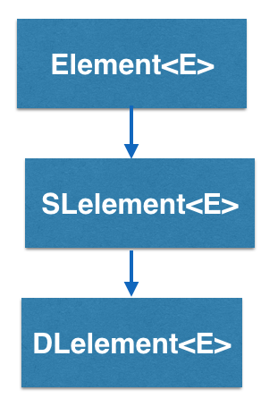
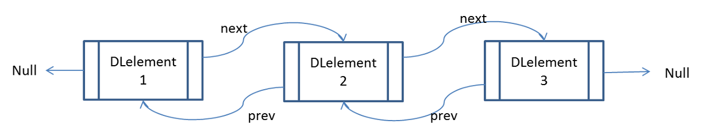

Doubly Linked List Tutorial
DLelement<E> is the basic building block used to implement doubly linked lists in BRIDGES and is inherited from SLelement<E>
How does the DLelement<E> work?
DLelement<E> stands for Doubly Linked Element, and is a container
that has two links, pointing to two other doubly linked elements. So
a DLelement<E> “knows” who
it’s pointing at, AND it knows who pointed at it.

In this example, calling getNext() on DLelement2 will return DLelement3.
Calling getPrev() on DLelement2 will return DLelement1. DLelement3 does not
have a next pointer pointing to another DLelement so calling getNext() on
DLelement3 will return NULL, indicating the end of the linked elements.
Notice that, since DLelement<E> has a getPrev() method, you can move
forwards AND backwards through the linked elements.
This tutorial will illustrate the use of doubly linked lists in BRIDGES. The tutorial consists of 3 parts:
- A basic tutorial on how to create a small doubly linked list out of a few elements and visualize it
- How to style the list with visual attributes
- Advanced features, such as iterators and range loops that can be used with the list
See also
This tutorial gives an introduction to the usage of doubly linked list. You can find the complete documentation of the features in the Doxygen documentation of the following classes and functions:
- DLelement [Java] [C++] [Python]
- Element [Java] [C++] [Python]
- ElementVisualizer [Java] [C++] [Python]
- LinkVisualizer [Java] [C++] [Python]
- Color [Java] [C++] [Python]
1. Getting Started: Build a Barebones Doubly Linked List
In the first part of the tutorial, we will create a doubly linked list with string labels, provide BRIDGES a handle to the data structure and visualize the list. Here is the code for this tutorial. The expected visualization is below that. Hit the 'l' button to turn on the labels.
Make sure that you can run the basic tutorial.
If you follow the URL given to you when the application runs, it will get to to the Bridges webpage that shows your output. You do not need to be logged into your BRIDGES account to see the output. If you are logged into your account, the output will show up in your gallery.
2. What Visual Attributes are supported for Doubly Linked Lists?
The list you created in the first part of the tutorial uses default attributes and is pretty boring, but it gives you the basic structure of a BRIDGES program.
Next, we will style the list we just created. For linked lists, you can set the shape, color, opacity and label of the elements, and for the links, color, opacity, thickness and label. Check out the links to the classes (listed above) that supports these attributes and also details the possible colors and shapes you can use and how to specify them.
The following code styles the linked list we created in part 1 and adds visual attributes. The expected visualization is below that.
3. Advanced Features.
In the last part of this tutorial, we show some advanced features with doubly linked lists. This depends on the programming language, to some extent. For lists, we demonstrate traversal of the list by using a regular loop, through iterators and range loops. These features make it more intuitive and convenient to traverse the data structure.
The following code illustrates these advanced features of doubly linked lists. The expected visualization is below that.
Well done! You’ve just created your doubly linked list!
Going Further
Check Bridges assignment page for linked list based assignments